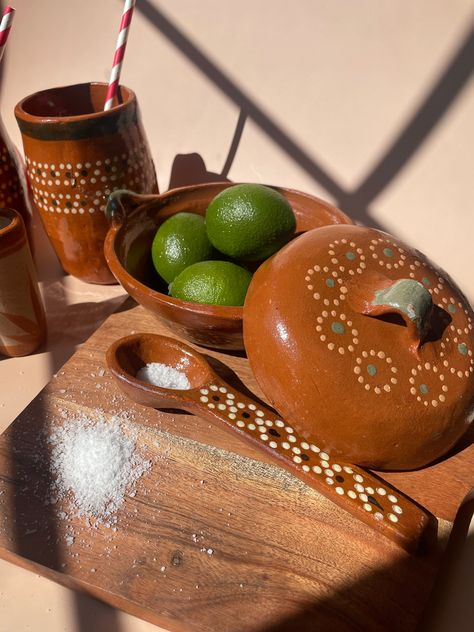

Welcome to Lindo y Querido, where we bring the vibrant spirit of Mexico directly to your doorstep. We specialize in curating and offering exquisite traditional Mexican pottery, each piece a testament to the rich cultural heritage and artistry of Mexico. Our collection showcases the diversity of Mexican craftsmanship, from intricately painted Talavera ceramics to rustic clay pots handcrafted by skilled artisans. At Lindo y Querido, we are passionate about sharing the beauty and warmth of Mexican culture with the world. Our mission is encapsulated in our saying: "Bringing a little bit of Mexico into your home." Whether you're seeking a statement piece for your living room or a unique accent for your garden, we invite you to explore our collection and let the soulful charm of Mexico adorn your home.